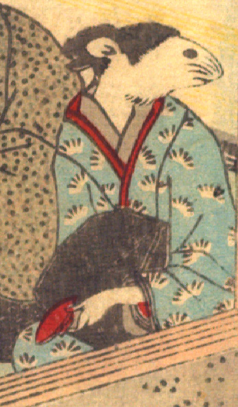

女の鼠。髪を結い、白い柄の入った水色の着物をまとって、座っている。左手に朱色の盃を持ち、横を見ている。手は人間のものである。
著作者：David Thompson／出典：親書誌：U426_nichibunken_0112：Nedzumi no Yome-Iri／日付：2006／資源識別子：U426_nichibunken_0112_0002_0003
Copyright (c)2010- International Research Center for Japanese Studies, Kyoto, Japan. All rights reserved.